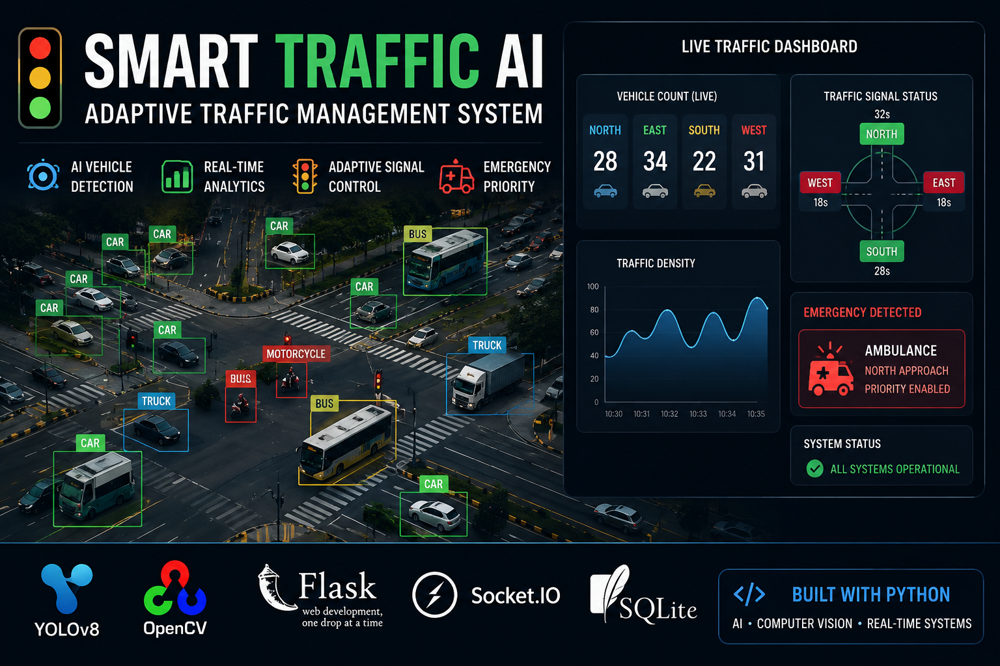

Detection Pipeline
12 vehicles
OpenCV • Flask Dashboard • Real-time
Bangalore, India · JSS Academy
Building data-driven solutions from raw data to production — combining data analysis, machine learning, deep learning, and AI to uncover insights, build predictive systems, and solve real-world problems. Experienced in transforming data into actionable insights and deployable AI/ML solutions.
Four applied-AI systems: computer vision, retrieval, federated learning and financial research. Every one went from raw data to a working product.

Computer Science undergrad at JSS Academy of Technical Education, Bangalore (CGPA 8.78) with hands-on experience across machine learning, deep learning, computer vision, and data analytics. I build real projects end-to-end — from cleaning raw sensor data and training classification models to deploying working products on the cloud.
My work spans IoT-driven ML pipelines, blockchain-secured federated learning, RAG-based research agents, and Android GenAI applications. I ship, iterate, and document — not just study theory.
MindMatrix
Techsolid Development
Bolt IoT
JSS Academy of Technical Education, Bangalore
2022 – 2026
P.E.S College, Bangalore
2020 – 2022
Sri Krishna International School, Bangalore
2019 – 2020